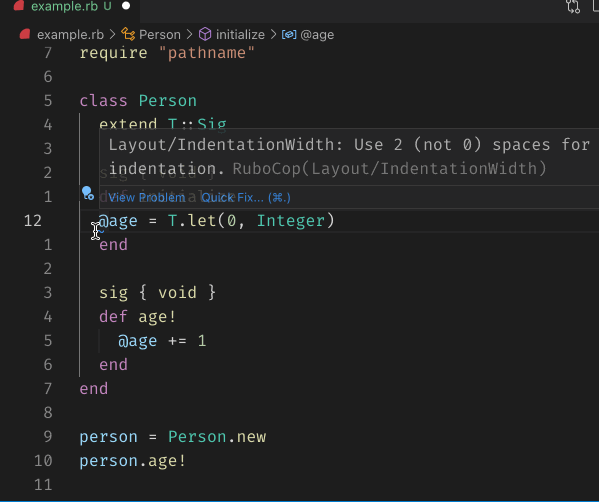

class RubyLsp::Requests::Diagnostics

The diagnostics request informs the editor of RuboCop offenses for a given file.
Example¶ ↑
def say_hello puts "Hello" # --> diagnostics: incorrect indentation end
Public Class Methods
new(global_state, document)
Calls superclass method